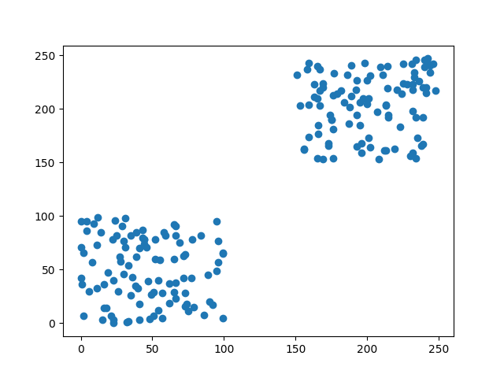
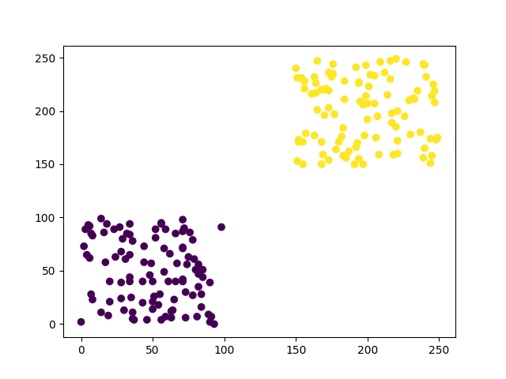
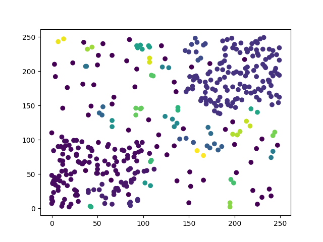
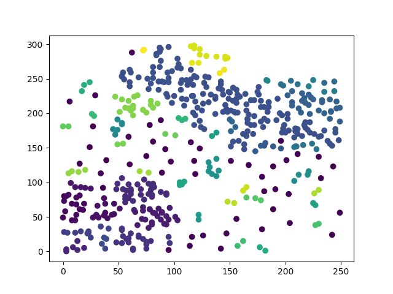
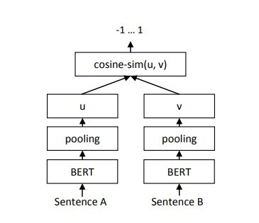

【day22】對Google評論自動分群-HDBSCAN與Sentence-BERT(上)
發布日期: 2022-09-26 21:30:21
原文連結: https://ithelp.ithome.com.tw/articles/10298507
DBSCAN的問題
我們昨天提到了分群演算法DBSCAN的分群原理，也提到了密度不同會導致的問題，你可能會覺得這是一個小問題，但在實際使用上卻因這個密度，從而導致很多例外情況發生。我們先看以下例子

x = np.random.randint(0, 100, 100).tolist() + np.random.randint(150, 250, 100).tolist()
y = np.random.randint(0, 100, 100).tolist() + np.random.randint(150, 250, 100).tolist()
X = [[i,j] for i,j in zip(x,y)]
X = np.array(X)
首先我們先用程式創建一個密度相似的資料集，接下來透過DBSCAN分群來看看結果。

dbscan = DBSCAN(eps=30, min_samples=4)
dbscan.fit(X)
label_pred = dbscan.labels_
plt.scatter(X[:, 0], X[:, 1],c=label_pred)
plt.show()
可以看到圖片中分群效果是很好的，這是因為我們知道資料分布的狀況，而且數據不混亂，所以可以很快地設定DBSCAN的參數。但在實際的數據中很難像圖片中一樣乾淨。所以我們現在加入一些雜訊，讓資料更能貼近實際狀況。

在這裡我重新調整了DBSCAN的參數(eps=10,min_sample=3)，調整完後可以看到DBSCAN還是能大致分類出兩大群，但效果已經沒有一開始的好，如果這時我們又加入了一筆資料呢?

加入資料後分群的結果再度變成了另一種樣子，這就是DBSCAN特性造成的最大的缺點，只要去變動一點資料，或是稍微調整參數值，就會大幅度的改變原先的結果。而且調整DBSCAN的參數時，必須需要對原始資料非常熟悉，不然會非常的難調整參數，可能條整了半天都沒辦法達成想要的結果。
看到了DBSCAN的問題是不是覺得拿來做分群會非常的麻煩，所以我們需要了解一下HDBSCAN這個分群方式
HDBSCAN(Hierarchical DBSCAN)
HDBSCAN(Hierarchical DBSCAN)就是為了解決DBSCAN的這些問題從而誕生的技術，不過這一個技術說明起來會牽扯到非常多的相關知識，所以我在這邊挑幾個重點來講解HDBSCAN的分群方式。
空間變換
在我們分群時最頭痛的就是異常點，因為不管是K-means還是DBSCAN都會因為異常點從而影響到了分群的結果，為了改善異常點問題，HDBSCAN利用了密度的關係來作空間變換，因為異常點密度較低，所以只需密度較低的樹據，推移到更遙遠的地方，這樣子程式就更容易忽略這些異常點。
建立最小生成樹
通過了剛剛提到的空間變換，我們會取得一些密度較高，但各群組密度卻不相同的數據，因為這些群組的產生方式，是依照隨機半徑匡列出來的數據點，也因為密度不同的關係，若要有良好的分群效果必須要在這些群組內計算出最有可能的分群結果，所以我們需要在群內使用演算法產生出最小生成樹，來計算我們各點之間的權值。
構建與壓縮群組層次結構
我們給定群內的最小生成樹，下一步是將其轉換為連接組件的層次結構。根據樹之間的距離，對樹的邊緣進行按增加的順序排序，不斷的重複以上動作，直到每條邊都創建一個新的合併的群組(數據點較近的重新分成一群)。這樣子就能夠將龐大而復雜的群組拆分成更小的群組，如果群組內有少於最小的樣本的點，就會被當成異常點
統整了以上提到的三種技術，HDBSCAN實際上做了以下的事情來達成分群的效果。
1.隨機找到一個數據點當作圓心，並隨機產生半徑畫圓，匡列到的數據點都會被當成同一群類
2.通過各圓心得距離來初步排除異常點
3.在各群組內的建立最小生成樹
4.通過演算法將群內的數據點分成更小的群組，並根據設定的最小樣本數排除異常點
5.重複以上動作直到掃描完所有的數據點
與DBSCAN不同的地方是，因為半徑是由程式隨機產生，所以我們只需要控制圓圈內的最小數據點(最低密度)，就能夠快速又穩定的完成分群。這樣子的作法雖然能夠達到較穩定的分群結果，但也因為在構建群組層次結構時會將這些結果再分的更小，所以我們基本上都需要手動合併一些主題。
說完了HDBSCAN，接下來我們來看看為何文字分群要使用S-BERT這一個model吧。
Sentence-BERT(S-BERT)
為了將文字轉換成能夠被分群的資料，我們需要透過一些方式轉換，像是可以通過先前接觸到的BERT，透過訓練文本之間的回歸任務，將文字拼接到網路之中，但如果是使用BERT方式，過程將會十分的緩慢，例如層次分群的方法，分群10,000個句子，BERT大約需要花費65個小時才能夠完成。但我們不可能只是為了分群就等了這麼久，所以我們要來看看S-BERT究竟是什麼?能不能替代BERT當作分群轉換方式。
S-BERT這是個model是對BERT分群的方式改進而產生的model，該model是使用孿生網路(Siamese network)和三重網絡(triplet networks)結構來產生一個有意義的embedding，embedding結果可以直接通過餘弦相似度或歐式距離等數學公式直接進行比對，這替代了原本BERT對句子之間做回歸的訓練時間。據S-BERT論文所說，可以將BERT原本65小時訓練時長縮短至僅僅5秒。
孿生網路(Siamese network)
在開始說明S-BERT之前我們要先知道什麼叫做孿生網路(Siamese network)，所謂的孿生神經網路，就是由兩個權值共享（Shared Weights）的子網路所建構出的一個網路，你可能會想若是兩個相同的神經網路那並且權值共享，那不就等於是一個相同的網路嗎?幹嘛要多此一舉將一個網路能解決的是分成兩個。這個問題的答案非常簡單。
答案就是我們需要兩個embedding的結果來計算文本之間的相似度，所以我們需要有兩個輸入與兩個輸出，這時就使用一個網路就無法達成這個目的了。
三重網絡(triplet networks)
三重網絡是孿生網路的一種延伸，孿生不同的是，三重網路在訓練時，採用三個樣本為一組，分別是參考樣本、同類樣本、異類樣本，這三個樣本是使用相同的網路。
三重網路會有兩個輸出一個是參考樣本與同類樣本計算出來的相似距離，另一個是參考樣本與異類樣本計算出來的最不相似距離，通過這樣的訓練方式我們就可以找到最相似的樣本與最不相似的樣本。
三重網路的做法與我們在【day13】預訓練模型訓練 & 應用- 使用OpenCV製作人臉辨識點名系統 (下)稍微提及到的Google Face Net所要做的事情相同，只是對象從人臉變成了文字而已。
接下來我們來看看S-BERT的架構到底是什麼
S-BERT架構

S-BERT做了些實驗比較孿生網路與三重網路哪種方式較佳，而這一方面由孿生網路勝出，所以我們可以看到圖片中S-BERT的基礎架構其實就是，將原始的BERT加上一層池化層並更改成孿生網路的模式而已。
在S-BERT的網路中池化層的功用非常的重要，因為輸入的token都不同，所以輸出的維度也就會不平均，於是就需要在BERT的輸出後面，加入一層mean pooling來取token的平均值，這樣子就可以取得BERT該有的embedding大小。
通過這樣子的結果，我們就可以直接使用這個embedding來各句子之間的相似度，或是直接使用這個embedding來幫助我們對文字做分群。
結論
我們今天所講的兩個技術，都是在文字分群中相當重要的，因為我們在分群時最重要的就是準確率以及完成速度，若分群的速度過於緩慢，那不如自己手動分群。
所以我們需要拋棄掉BERT的方式，改用S-BERT幫助我們完成分群的動作，並且利用HDBSCAN這種不容易受到資料影響的分群方式，讓我們能夠找到更仔細的群組，接下來就是看我們該如何把這些群組合併或是移除了，我們明天就來看看如何使用這兩個技術，對google評論分群的效果。